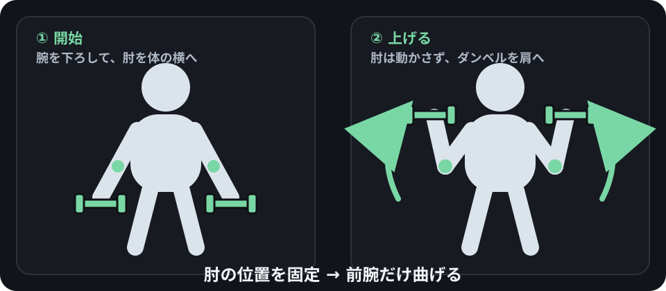
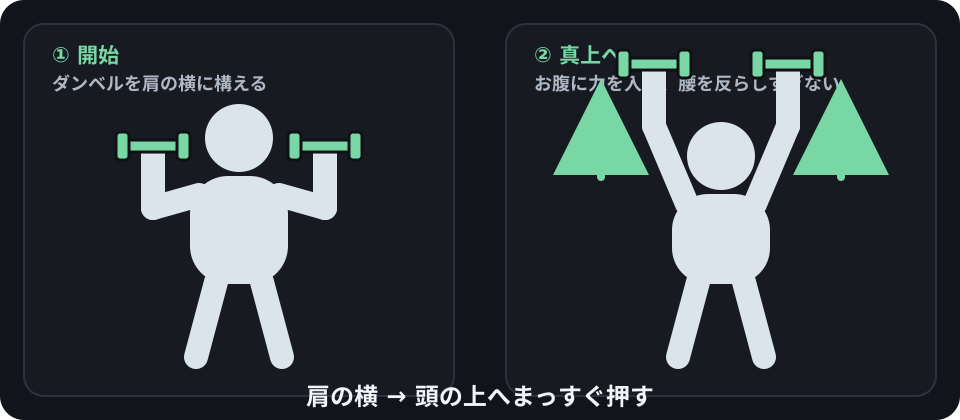
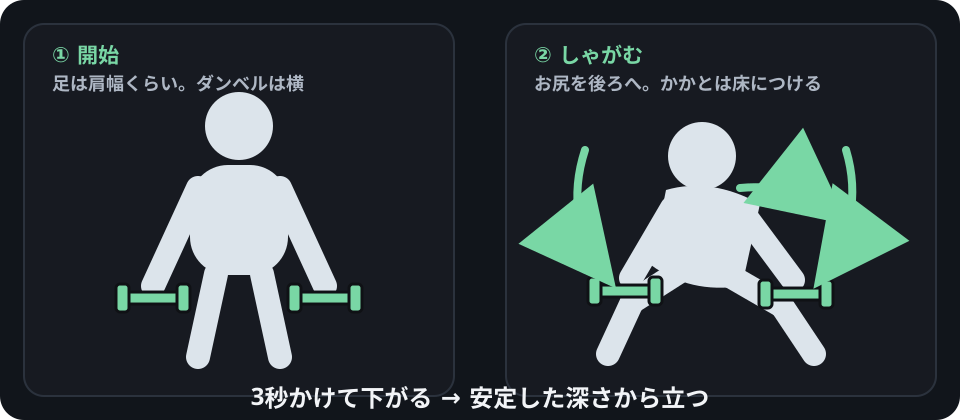

最初に見るポイント
BEFORE YOU START
始める前
いきなり限界までやらず、痛みなく動ける範囲を確認してから始めます。
軽く体を動かす
その場歩き、肩回し、浅いスクワットなどを数分。準備運動だけで疲れるほど強くする必要はありません。
古いダンベルなら先に確認
持ち手・プレートに大きな割れ、外れそうなガタつき、鋭いサビがないか確認。異常がある場合は使いません。
3 KG × 2 DUMBBELLS
3kgダンベル2個の使い方
3kgでも肩・腕には十分使えます。脚や背中は、ゆっくり動かして回数を増やすと負荷を作れます。
図の見方
左が開始姿勢、右が動かした後です。緑のダンベルと矢印だけ見ても動きが追えるようにしています。
腕立てで手首の小指側が痛む場合
下の種目でも同じ場所が痛んだら、その種目は中止。ダンベルを握るときは手首を曲げず、前腕と一直線にします。
01
ダンベルカール
力こぶ / 上腕二頭筋

- 足を肩幅くらいにして、左右に1個ずつ持つ。
- 肘を体の横に固定する。
- 手のひらを前に向け、ダンベルを肩方向へ上げる。
- 上で止めすぎず、2〜3秒かけて下ろす。
12〜20回 × 2セット反動で体を振らない
02
ショルダープレス
肩 / 上腕三頭筋

- ダンベルを肩の横へ。手首はまっすぐ。
- お腹に軽く力を入れ、腰を反らしすぎない。
- ダンベルを真上へ押す。
- 肘をロックするほど伸ばさず、ゆっくり肩まで戻す。
8〜15回 × 2セット腰が反るなら回数を減らす
03
ベントオーバーロー
背中 / 腕

- 膝を軽く曲げ、お尻を後ろへ引いて上体を前傾。
- 背中を丸めず、ダンベルを真下へ垂らす。
- 肘を腰の後ろへ引くイメージで持ち上げる。
- 肩をすくめず、ゆっくり下ろす。
15〜25回 × 2セット背中を丸めない
04
ダンベルスクワット
太もも / お尻

- 左右に1個ずつ持ち、足を肩幅前後にする。
- お尻を後ろへ引きながら膝を曲げる。
- 3秒かけて下がる。
- かかとを床につけたまま立ち上がる。
15〜25回 × 2セット深さより安定を優先
迷ったら今日はこれ
カール
12〜20回→ プレス
8〜15回→ ロー
15〜25回→ スクワット
15〜25回
12〜20回→ プレス
8〜15回→ ロー
15〜25回→ スクワット
15〜25回
1周したら1〜2分休憩 → もう1周。最初はこれだけでOKです。
PUSH-UP
腕立て伏せ
胸・肩・上腕三頭筋を中心に使う。手首に痛みが出る日は無理に行いません。
フォーム
- 手は肩幅〜少し広め。
- 頭からかかとまでをほぼ一直線にする。
- 腰を反らさず、肘を真横に開きすぎない。
- コントロールできる範囲まで胸を下げ、床を押して戻る。
手首が痛い場合
痛みを我慢して続けず、壁腕立てや安定した高い台で負荷を下げます。それでも痛むなら腕立ては休みます。
SQUAT
自重スクワット
ダンベルなしでもフォーム練習として使えます。
フォーム
- 足は肩幅前後、つま先は自然に少し外へ。
- 足裏全体で床を踏む。
- お尻を後ろへ引きながら股関節・膝を曲げる。
- 膝はつま先とだいたい同じ方向へ。
深さ
かかとが浮かず、ふらつかず、同じフォームで戻れる深さを優先します。
PLANK
プランク
腹部・背中まわりを含む体幹を、姿勢を保ちながら使います。
フォーム
- 肘を肩のほぼ真下へ。
- 頭・背中・お尻・かかとをほぼ一直線に。
- 腰を反らさず、お尻を上げすぎない。
- 呼吸を続け、崩れる前に終了。
目安
15〜30秒 × 2セットから。腰・首・肩に鋭い痛みが出たら終了します。
RECOVERY
筋肉痛・張りがある日
遅発性筋肉痛（DOMS）は、慣れない運動や強い運動のあと1〜3日ほどして出ることがあります。
軽く動いてよい目安
軽い張りやだるさで、日常動作とフォームに大きな問題がない。
負荷を下げる
フォームが保てない、いつもの回数がほとんどできない、筋肉痛が強い。
中止・相談を優先
鋭い痛み、強い腫れ、しびれ、動かせないほどの脱力など。
HOW TO PROGRESS
3kgが軽くなってきたら
重量をすぐ買い替えなくても、ある程度は難しくできます。
① 回数を少し増やす
フォームが崩れず余裕なら、まず1〜3回ずつ増やします。
② 下ろす動作を遅くする
2〜3秒かけて下ろすだけでも、3kgの負荷を感じやすくなります。
回数・セット数・動作速度を一度に全部増やさず、1つずつ調整します。
参考情報
- Mayo Clinic — Biceps curl
- Mayo Clinic — Squat exercise
- Cleveland Clinic — Delayed Onset Muscle Soreness (DOMS)
- U.S. Office of Disease Prevention and Health Promotion — Muscle-strengthening activity
このサイトは一般的な運動情報であり、個別の診断・治療・リハビリの指示を目的としたものではありません。